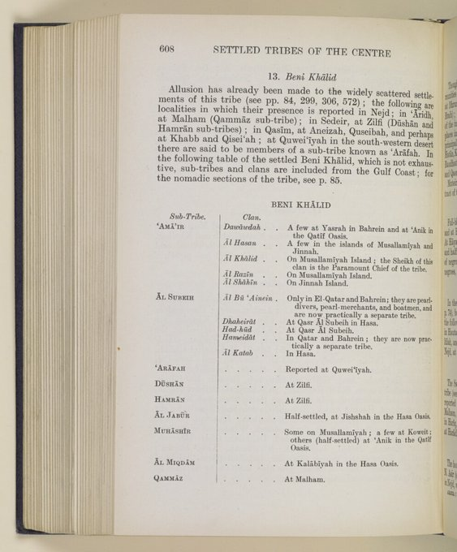

References — مراجع ومصادر
مصادرنا ومراجعنا
كتب ومصادر ذكرت العماير والذواودة في سياق بني خالد والبحرين — مقسّمة أكاديميًّا للقراءة والتحقق.
هذه المراجع تخصّ الذواودة في مملكة البحرين (العماير من بني خالد، الحد والمحرق). تشابه الاسم في مناطق أخرى لا يُعدّ دليلًا على النسب نفسه. اقرأ تنويه تمييز النسب.
كل مرجعٍ أدناه يذكر العماير و/أو الذواودة في سياق بني خالد والبحرين — للقراءة والتحقق الأكاديمي.
١ — مصادر الأنساب والقبيلة الأم (العماير — بني خالد)
المرجع الأول لإثبات الفرع الصريح داخل القبيلة الأم.
-
من أخبار وتاريخ بني خالد
محمد يوسف الخالدي
سياق الذكر: يفصّل في بطون وأفخاذ القبيلة، ويذكر «العماير» ويعدد فروعهم المستقرة في سواحل الخليج، ويذكر «الذواودة» كأحد الفروع البحرية التي انتقلت واستقرت في البحرين وتوارثت المشيخة والتجارة.
-
بنو خالد عبر القرون
عبد الكريم الوهبي
سياق الذكر: يستعرض تاريخ إمارة بني خالد السياسية والاقتصادية، ويتطرق إلى دور العماير كقوة بحرية للقبيلة على الساحل الشرقي (القطيف، جزيرة جنة، وجناح)، وكيف تفرعت منهم الأسر الحضرية في قطر والبحرين — ومنها عائلة الذوادي.
-
القبائل والبيوتات المؤرخة في دولة البحرين
د. منصور الشقحاء
سياق الذكر: يوثّق الأسر البحرينية ذات الأصول القبيلية الممتدة، ويذكر عائلة الذوادي صراحةً بانتسابها إلى العماير من بني خالد، وموطنهم التاريخي في المحرق والحد.
-
الجمهرة في أنساب الأسر والقبائل في الخليج والجزيرة العربية
العلامة حمد الجاسر
سياق الذكر: معجم ضخم يوثّق الأسر وأصولها؛ يسجل عائلة الذوادي في البحرين مرجعًا إياهم إلى نسبهم الخالدي الصريح (العماير)، ويوضّح تواجدهم الحضري في مدن وقرى البحرين والمنطقة الشرقية، مع التفريق بينهم وبين تشابه الأسماء في مناطق أخرى.
٢ — المصادر التاريخية الرسمية والوثائق الدولية
أقوى المصادر ميدانيًّا في رصد الأعيان وتجارة اللؤلؤ وسفن الغوص.
-
دليل الخليج — Geographical and Historical Gazetteer of the Persian Gulf
J.G. Lorimer
سياق الذكر: في القسم الجغرافي (مادة البحرين — والحد والمحرق)، يذكر قبيلة «الذواودة» (Al-Thawawdah) بالاسم كفرع مستقر، ويحدد تعدادهم وامتلاكهم لبيوت وسفن غوص، ويصنفهم ضمن القبائل الحضرية ذات المكانة العالية في مدينة الحد والمحرق.
المجلد الجغرافي — مادة البحرين (السكان)«الذواودة (Thawāwdeh) ومفردها ذوادي (Thawādi): قبيلة عربية مستقرة (حضر) في جزر البحرين… يتركز سكنهم في مدينتي الحد والمحرق… يشتغل معظم رجالهم في الغوص على اللؤلؤ والتجارة البحرية، ويمتلكون عدداً من سفن الغوص الراسية على الساحل.» جدول قبائل البحرين — دليل الخليج
«الحد:… القبائل الرئيسية… الذواودة (Thawāwdeh). ويعمل سكان البلدة، ومنهم الذواودة، في الغوص على اللؤلؤ حيث تمتلك البلدة أسطولاً كبيراً من سفن الغوص يتجاوز 150 سفينة…» مادة مدينة الحد — دليل الخليج
-
تقرير استخباري بريطاني — تقسيم بني خالد (1916)
IOR/L/PS/20/E84/1 — Settled Tribes of the Centre, p. 608
سياق الذكر: جدول رسمي في تقرير المقيمية البريطانية يُقسّم بني خالد (Beni Khālid) إلى بطون وعشائر. يذكر الذواودة (Dawāudah) صراحةً تحت بطن العماير ('Amā'ir) — لا تحت المهاشير ولا الجبور — مع ذكر تواجدهم في يسرة (Yasrah) بالبحرين وعنك بالقطيف.
«'Amā'ir — Dawāudah: A few at Yasrah in Bahrein and at 'Anik in the Qatif Oasis.» British Intelligence Report, 1916 — IOR/L/PS/20/E84/1, p. 608

صورة الأصل: صفحة 608 — «13. Beni Khālid» — جدول BENI KHĀLID. المرجع: IOR/L/PS/20/E84/1 تقسيم بني خالد كما ورد في التقرير (ترجمة موجزة):
البطن العشائر / الفروع العماير الذواودة، آل حسن، آل خالد، آل رزين، آل شاهين آل صبيح البوعينين، الظهيرات، الهدهود، الحميدات، آل كتب العرافة — آل دوشان — آل حمران — الجبور — المهاشير — آل مقدم — آل قماز — هذا التقرير يُثبت موقع الذواودة في شجرة بني خالد — انظر صفحة النسب.
-
معجم قبائل الخليج في المخطوطات البريطانية
مستل من تقارير المقيمية البريطانية — إعداد وترجمة عدة باحثين
سياق الذكر: إحصائيات قديمة لرجالات القبائل وأصحاب سفن الغوص وتجار اللؤلؤ؛ تظهر فيه أسماء أجداد العائلة (مثل أحمد بن حسن والشيخ عبد الله بن عيسى) في وثائق مبيعات اللؤلؤ والعرائض الأهلية.
-
سجلات المقيمية البريطانية في الخليج
British Residency Records — Qatar Digital Library
سياق الذكر: مراسلات أعيان البحرين وتوقيعات العرائض المرفوعة لحكام البحرين والمقيم السياسي البريطاني؛ تظهر فيها أسماء كبار أعيان وتجار الذواودة في سياق أعيان البلاد والغوص.
٢-ب — وثائق النوخذة عبد الله بن عيسى الذوادي
وثائق أولية تثبت مكانته كـ نوخذة غوص وشيخ في الحد — سيرته في صفحة الأجداد.
-
عريضة نواخذة الغوص — 1344هـ / أكتوبر 1925
مرفوعة إلى الشيخ حمد بن عيسى آل خليفة — ثم إلى المقيم البريطاني
سياق الذكر: اعتراض نواخذة وتجار الغوص على أنظمة مقترحة تحدّ من سلطة النوخذة في بيع المحصول وإدارة الجزوى. عبد الله بن عيسى الذوادي أول الموقّعين على العريضة.
بسم الله الرحمن الرحيم
إلى جناب الأجل الأمجد الأفخم الشيخ حمد بن الشيخ عيسى آل خليفة المحترم…
«…نرفع لسعادتكم شكوانا من خسارة المال واشتغال البال والسبب في ذلك النظامات الجارية في خصوص الغوص قد أضرت بنا… الذي نرجو من فضلكم أن يكون البيع بنظر النواخذة…» حرر في ربيع الآخر سنة 1344هـ — عبدالله بن عيسى الذوادي (أول الموقّعين)من الموقّعين: صحيح مبارك بن شاهين العماري، حمد بن صقر البوفلاسة، مهنا بن فضل النعيمي، عيسى بن حمد الختم، سعد بن عمران الجميري، علي بن جمعة المضحكي، وأحمد بن عيسى النعيمي — بين آخرين.
-
مراسلات بلدية المحرق — 1354–1357هـ (1936–1938)
مجلس إدارة بلدية المحرق — سجلات الغوص والرسوم
سياق الذكر: كتب رسمية موجهة إلى عبد الله بن عيسى الذوادي تطلب منه تقديم قوائم الجزوى (البحارة) ورسوم البلدية عن مواسم الغوص الثلاثة (التسقام، السلف، الخرجية):
- 11 رجب 1355هـ / 27-9-1936 — قائمة أسماء الجزوى ودراهم موسم الخرجية
- 8 ربيع 1356هـ / 19-5-1937 — إعلان الحكومة رقم 4 — رسوم المواسم الثلاثة
- 8 رمضان 1356هـ / 12-11-1937 — بحار محميد بن إبراهيم — رسوم البلدية
- 29 رجب 1357هـ / 24-9-1938 — بحاران: حسن بن أحمد كلاتي ومحمد بن علي بوريال
-
نواخذة البحرين — بشار الحادي
قائمة أسماء النواخذة 1920–1960 — مستخرجة من وثائق البلدية
سياق الذكر: يذكر النوخذة عبد الله بن عيسى الذوادي ضمن أكثر من 400 اسم نوخذة وثّقهم الباحث من سجلات البلدية والدفاتر الحكومية والخاصة.
bashaaralhadi.blogspot.com — نواخذة البحرين
٣ — كتب تاريخ وتراث البحرين
الدور السياسي والتحالفي مع آل خليفة منذ التأسيس.
-
التحفة النبهانية في تاريخ الجزيرة العربية
الشيخ محمد بن خليفة النبهاني
سياق الذكر: يفرد فصولاً لتاريخ العوائل والأعيان الذين ساهموا في بناء البحرين الحديثة بعد فتح ١٧٨٣م، ويأتي على ذكر رجالات وأعيان الذواودة في الحد ومجالسهم المفتوحة ودورهم الاجتماعي.
-
تاريخ القبائل العربية في جزر البحرين
بشير زين العابدين
سياق الذكر: يستعرض ديموغرافية وجغرافيا القبائل في البحرين، ويوثّق استقرار العماير (والذواودة) في شرق الجزيرة (الحد) ودورهم التأسيسي والدفاعي كجزء من النسيج القبلي الموالي للحكم.
٤ — صحافة ومصادر إعلامية — البحرين
-
جريدة البحرين — دانة عبد الله الذوادي
عبد الله الزائد — محرر جريدة البحرين
سياق الذكر: أخبار عن اللؤلؤة النادرة التي اشتراها الحاج عبد الرحمن القصيبي من الشيخ عبد الله بن عيسى الذوادي:
- 6 رجب 1358هـ / 17 أغسطس 1939 — «لؤلؤة نادرة الوجود من مغاصات البحرين… زنتها 18 قيراطاً»
- 10 شعبان 1359هـ / 12 سبتمبر 1940 — ذكر بيع القصيبي لكمية لآلئ كبار على ملوك الهند
القصة التفصيلية — من شاهد عيان (محمد بن عبد الله بن عيسى) — في سيرة النوخذة.
-
صحيفة الأيام — مقال
سياق الذكر: مادة إعلامية بحرينية عن شأن العائلة والمجتمع — للقراءة والتحقق المحلي.
alayam.com — Article 414597 -
صحيفة الأيام — محاكم وأحكام
سياق الذكر: مقال من قسم المحاكم — حضور العائلة في السياق القضائي والاجتماعي البحريني.
alayam.com — courts-article 411751
٥ — مجلس العائلة — تواصل رسمي
هل تعرف مصدرًا أو وثيقةً تُثبت نسبًا أو حدثًا من تاريخ الذواودة في البحرين؟ تواصل معنا لمراجعتها وإضافتها بعد التحقق.